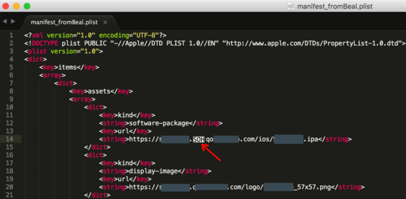
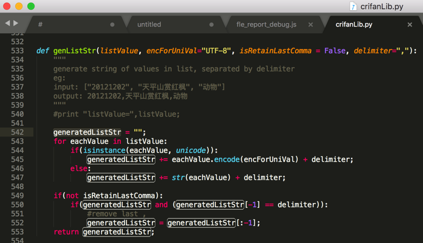
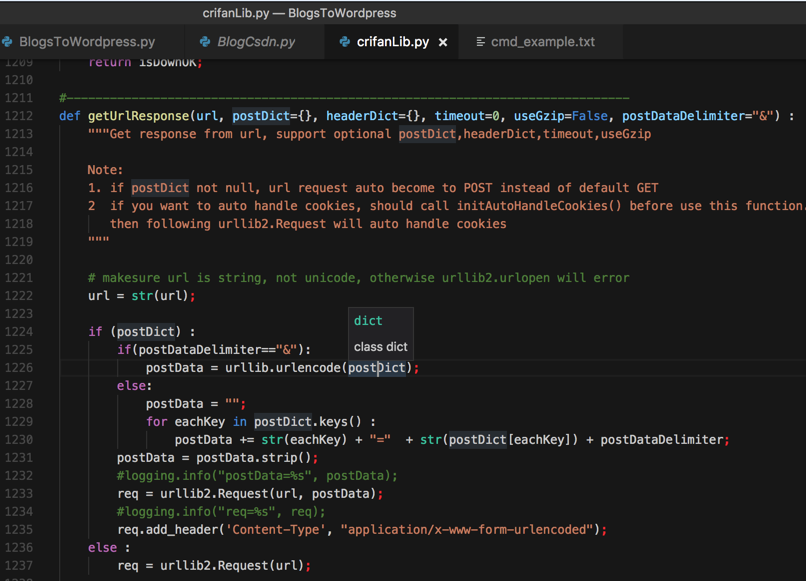
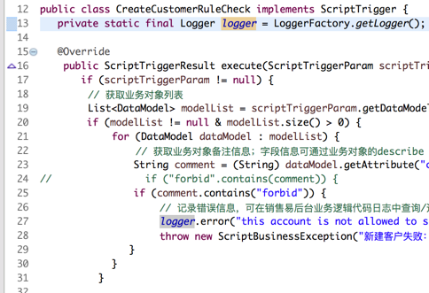
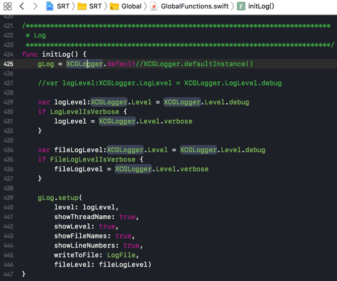
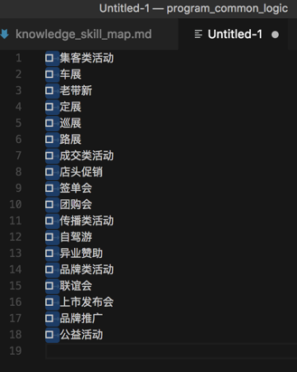
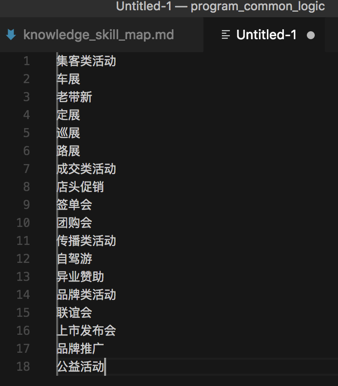
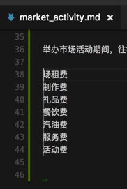
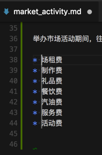

通用功能和逻辑
此处整理，编辑器和IDE都通用的功能：
支持显示特殊字符包括不可见字符
字符编码知识
关于不可见字符，控制字符，想要深入了解的，可以去看 【整理Book】字符编码详解与应用 和 字符编码简明教程 – 在路上 所提到的：
- ASCII字符集共27个字符
- =128个字符
- = 33个控制字符 + 95个可见字符
很多编辑器，支持显示特殊字符，比如：
Notepad++
Notepad++支持显示回车符，换行符，TAB键，行首，行尾等特殊字符
Sublime
举例：
Sublime在需要的时候，能够显示出特殊的SOH字符：
［已解决］企业版iOS的ipa通过OTA发布后还是无法下载和安装

以协助帮忙找到iOS的OTA版的ipa文件为何无法下载。
VSCode
详见：
选中或光标所在位置的内容的高亮显示
一般的编辑器，IDE都支持常见的：
选中（或者光标所在位置的）一个变量/函数/字符串，则对应的单词会高亮显示
目的是方便及时找到和查看对应的变量/函数等的被使用的地方。
举例：
Sublime的选中高亮

VSCode中选中高亮

Eclipse的选中高亮

Xcode的选中高亮

列编辑模式
有些时候要多列一起编辑，则支持列编辑模式的话，就很好用。
支持列编辑的编辑器或IDE：
- Notepad++
- VSCode
VSCode支持列编辑
- 批量删除行首的内容
- Alt+Shift+左键 选择：
- 
- 然后删除掉：
- 
- 即可批量删除每行前面的多余内容了
- Alt+Shift+左键 选择：
- 批量给行首添加内容
- 想要给每行前面添加星号和空格
- 先选择要编辑的多行的内容
- 鼠标点击到开始位置，然后
Alt+Shift+鼠标左键选择到所有的行的行首：- 
- 然后直接输入
*，即可批量添加到每行的行首：- 
- 先选择要编辑的多行的内容
- 想要给每行前面添加星号和空格